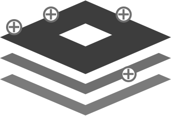
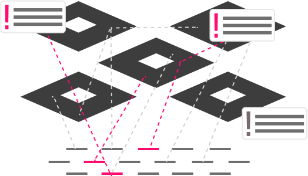

Receive an ethical overview of your product critique and respond, identifying the ethical challenges together.

Use our suite of tools to create, connect, consider and re-think the social and ethical impacts of your product and learn about ways to understand the challenges and address them practically.

Get an overview of your product’s layered impacts and align with your teammates about your ethical values and the vision for the future of your product.